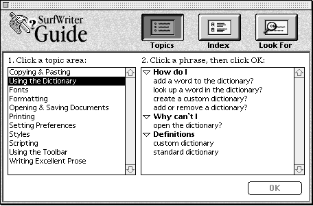
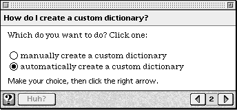
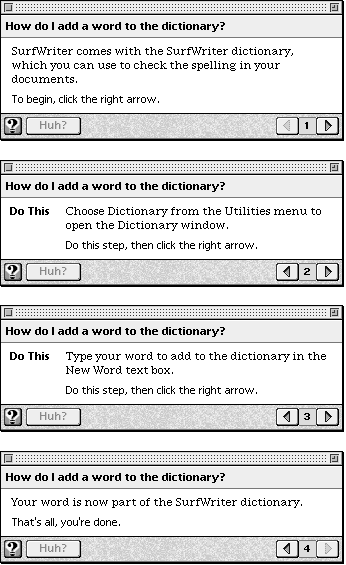
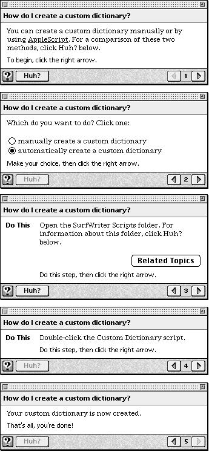
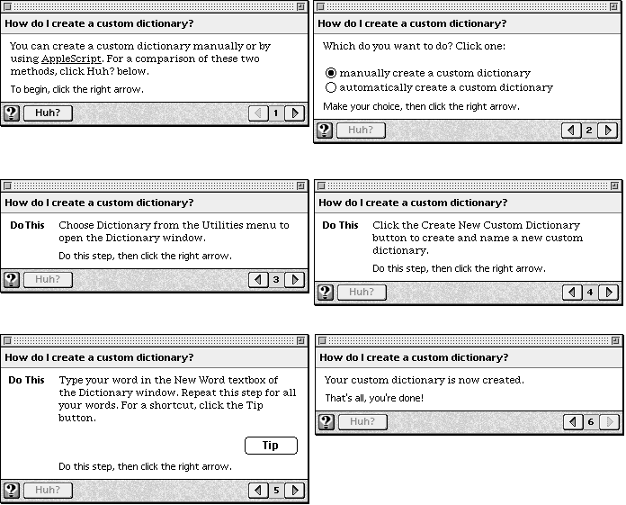

Legacy Document
Important: The information in this document is obsolete and should not be used for new development.
Important: The information in this document is obsolete and should not be used for new development.


Help Content
This section focuses on SurfWriter Guide by describing its source files for topic areas and topics, sequences, panels, coachmarks, context checks, and event functions. Illustrations of SurfWriter Guide's access window and panels are also shown, so that you can map this onscreen help to SurfWriter Guide's source file content.Topic Areas and Topics
The file "Topic Areas and Topics.src" specifies the topic areas and topics for SurfWriter Guide. Figure C-2 shows these topic areas and shows the topics for one specific topic area, "Using the Dictionary".Figure C-2 The access window with Topics selected

The Guide Script commands that define the topic areas for SurfWriter Guide's access window are shown in Listing C-7. For each topic area, the associated headers and topics are also defined. SurfWriter Guide provides two complete topic areas, "Using the Dictionary" and "Using the Toolbar". Other topic areas use placeholders for topics, so that the source file is easier to follow.
Listing C-7 Topic areas and topics ("Topic Areas and Topics.src" file)
#define topic areas -- when the user chooses the Topics button, # Apple Guide displays the topic areas defined # by <Topic Area> commands #Apple Guide displays topic areas on the left side of a full # access screen #Topic areas are often followed by <Header> commands # and <Topic> commands #You use header commands to group one or more topics # in the same category #Headers are not required -- # you can choose to have all topics with no groupings by headers # or you can have headers with each topic grouped with a header #Note that a topic area MUST have at least 1 topic associated with it # A header command defines the bold headers that Apple Guide displays # in the right column when the user selects its associated topic area # A topic command defines a topic that Apple Guide displays # in the right column; the topic can either appear by itself or # have a header associated with it #Note that you should either have all single topics or # have all topics grouped with headers #Apple Guide expands and compresses the topics under a header # when the user clicks the triangle to the left of the header #topic areas are displayed in the same order as they appear # in the source file #Tip: You can use style or color information in Guide Script # commands to make your source files easier to read <Topic Area> "Copying & Pasting" #topic area on left column of screen <Header> "How do I" #header for right column when user # chooses "Copying & Pasting" #topics displayed/expanded/etc with "Copying & Pasting" <Topic> "placeholder for topic?","SequenceGeneric" <Topic> "another placeholder for topic?","SequenceGeneric" <Topic Area> "Using the Dictionary" <Header> "How do I" <Topic> "add a word to the dictionary?","SequenceAddWords" <Topic> "look up a word in the dictionary?","SequenceGeneric" <Topic> "create a custom dictionary?", "SequenceCreateCustomDictionary" <Topic> "add or remove a dictionary?","SequenceGeneric" <Header> "Why can't I" <Topic> "open the dictionary?","SequenceGeneric" <Header> "Definitions" <Topic> "custom dictionary","SequenceDefnCustomDictionary" <Topic> "standard dictionary","SequenceDefnStdDictionary" <Topic Area> "Fonts" <Header> "How do I" <Topic> "placeholder for topic?","SequenceGeneric" <Topic Area> "Formatting" <Header> "How do I" <Topic> "placeholder for topic?","SequenceGeneric" <Topic Area> "Opening & Saving Documents" <Header> "How do I" <Topic> "placeholder for topic?","SequenceGeneric" <Topic Area> "Printing" <Header> "How do I" <Topic> "placeholder for topic?","SequenceGeneric" <Topic Area> "Setting Preferences" <Header> "How do I" <Topic> "placeholder for topic?","SequenceGeneric" <Topic Area> "Styles" <Header> "How do I" <Topic> "placeholder for topic?","SequenceGeneric" <Topic Area> "Scripting" <Header> "How do I" <Topic> "placeholder for topic?","SequenceGeneric" <Topic Area> "Using the Toolbar" <Header> "How do I" <Topic> "use the tools in the toolbar?","Toolbar" <Topic Area> "Writing Excellent Prose" <Header> "How do I" <Topic> "placeholder for topic?","SequenceGeneric"Sequences
This section focuses on the file "Sequence Definitions.src", which specifies the sequences for each topic in SurfWriter Guide. The main sequences for each topic area are shown in Listing C-8 through Listing C-12.The Placeholder Sequence
SurfWriter Guide uses the placeholder sequence shown in Listing C-8 for all topics other than those associated with "Using the Dictionary" and "Using the Toolbar". Thus, the guide file displays all topic areas and topics, while allowing the actual sequences to be added incrementally.Listing C-8 Placeholder sequence (from the "Sequence Definitions.src" file)
#Here's a sequence definition used as a placeholder <Define sequence> "SequenceGeneric", "How do I *do this task*?" <SNBS> "Std nav bar" <Panel> "PanelGeneric" <End sequence>"How do I use the tools in the toolbar?" Sequence
The sequence definition shown in Listing C-9 specifies the navigation button set for the sequence and then lists all the panels that are part of the sequence. This sequence has one panel ("Tools with Tip") that launches another sequence if the user clicks the panel's Tip button. The sequence "Toolbar TipSeq" shows the sequence for the Tip panel.Listing C-9 Sequence for "How do I use the tools in the toolbar?" (from the "Sequence Definitions.src" file)
#A sequence defn for a topic of the topic area "Using the Toolbar" <Define sequence> "Toolbar", "How do I use the tools in the toolbar?" <SNBS> "Std nav bar" <Panel> "Use Tools" <Panel> "Tools 2" <Panel> "Tools 3" <Panel> "Tools with Tip" <Panel> "Tools 4" <End sequence> #A sequence defn for a Tip of "How do I use the tools in the toolbar?" <Define sequence> "Toolbar TipSeq", "Tip: How do I use the tools in the toolbar?" <SNBS> "Std nav bar" <Panel> "Toolbar Tip" <End sequence>"How do I add a word to the dictionary?" Sequence
The sequence definition shown in Listing C-10 includes one <Skip If> command and three <Make Sure> commands. The second panel in the sequence is skipped if the condition specified in the command is true. This sequence uses Continue panels, as shown by the <Make Sure> commands. If the condition specified in the <Make Sure> command is not true, a Continue panel is displayed. (See the source file on the CD-ROM for an example of a sequence that uses an Oops panel.) See Figure C-4 on page C-31 for an illustration of the panels in this sequence.Listing C-10 Sequence for "How do I add a word to the dictionary?" (from the "Sequence Definitions.src" file)
#A sequence defn for a topic of the topic area "Using the Dictionary" <Define sequence> "SequenceAddWords", "How do I add a word to the dictionary?" <SNBS> "Std nav bar" <Panel> "AddWords1" <Skip If> ActiveWindow('ttxt', "Dictionary") AND ActiveAppIs('ttxt') <Panel> "AddWords2" <Make Sure> ActiveAppIs('ttxt'), "SWContinuePanelSeq" <Make Sure> ActiveWindow('ttxt', "Dictionary"), "SWContinuePanelSeq" <Panel> "AddWords3" <Make Sure> ActiveWindow('ttxt', "Dictionary"), "SWContinuePanelSeq" <Panel> "AddWords4" <End sequence> #*******************Example of a Continue sequence*************** #A sequence definition for a Continue sequence in the above topic, # "How do I add a word to the dictionary?" <Define Sequence> "SWContinuePanelSeq", "Oops" <Panel> "SWContinuePanel" <End Sequence>"How do I create a custom dictionary?" Sequence
SurfWriter Guide includes the topic "How do I create a custom dictionary?" The sequence for this topic includes a panel containing radio buttons, as shown in Figure C-3.Figure C-3 A panel with radio buttons

SurfWriter Guide allows the user to create a custom dictionary either automatically or manually. To implement this, a panel with radio buttons is used and the sequence definition (shown in Listing C-11) includes an <If> command that tests the state of a radio button and then branches accordingly.
When using SurfWriter Guide, if the user chooses to create a custom dictionary automatically (by clicking the appropriate radio button then clicking the right arrow button), the <If> command and the statements immediately following the <If> command are executed (see Listing C-11). Note that the panels in this branch include <Skip If> and <Make Sure> commands. This source file uses the
ActiveWindow,OpenWindow, andActiveAppIscondition functions (these context checks are defined in the Standard Setup file) to determine whether the folder is active and if not, it automatically activates or opens the folder for the user.The panels corresponding to the user choosing the manual method follow the <Else> command. The
ActiveWindowandActiveAppIscondition functions are also used in this branch to determine whether a particular window is active and open. Both branches use Continue panels ifActiveWindowreturns false. Note that it's important that SurfWriter Guide determine not only whether a window is open but also whether it is active, especially when using coachmarks for a window. Otherwise, the coachmark may be drawn in an inappropriate window.Finally, Listing C-11 shows that the sequence uses a common closure panel, which is presented to the user no matter which branch they chose. See
Figure C-5 on page C-35 and Figure C-6 on page C-36 for illustrations of the panels in this sequence.Listing C-11 Sequence for "How do I create a custom dictionary?" (from the "Sequence Definitions.src" file)
#A sequence defn for a topic of the topic area "Using the Dictionary" <Define sequence> "SequenceCreateCustomDictionary", "How do I create a custom dictionary?" <SNBS> "Std nav bar" <Panel> "CreateCustomIntro" <Panel> "CreateCustomDecision" #branch based on state of radio buttons in previous panel <IF> radioButtonState("automatically create a custom dictionary", "CreateCustomDecision") #if user chose "automatically" do this sequence of panels <Skip If> ActiveWindow('MACS', "SurfWriter Scripts") AND ActiveAppIs('MACS') <Panel> "CreateCustomAuto1" <Make Sure> ActiveWindow('MACS', "SurfWriter Scripts"), "SWContinueSeqCustomAuto1" <Make Sure> OpenWindow('MACS', "SurfWriter Scripts"), "SWContinueSeqCustomAuto1" <Make Sure> ActiveAppIs('MACS'), "SWContinueSeqCustomAuto1" <Panel> "CreateCustomAuto2" <Else> #if user chose "manually" do this sequence of panels <Skip If> ActiveWindow('ttxt', "Dictionary") AND ActiveAppIs('ttxt') <Panel> "CreateCustomManual1" <Make Sure> ActiveAppIs('ttxt'), "SWContinuePanelSeq" <Make Sure> ActiveWindow('ttxt', "Dictionary"), "SWContinueSeqCustomManual1" <Panel> "CreateCustomManual2" <Make Sure> ActiveAppIs('ttxt'), "SWContinuePanelSeq" <Make Sure> ActiveWindow('ttxt', "Dictionary"), "SWContinueSeqCustomManual1" <Panel> "CreateCustomManual3" <End If> #common closure panel <Panel> "CreateCustomAllDone" <End sequence> #A sequence definition for a Continue sequence in the topic, # "How do I create a custom dictionary (automatically)?" <Define Sequence> "SWContinueSeqCustomAuto1", "Oops" <Panel> "SWContinuePanelCustomAuto1" <End Sequence> #A sequence defn for another Continue sequence in the topic, # "How do I create a custom dictionary (manually)?" <Define Sequence> "SWContinueSeqCustomManual1", "Oops" <Panel> "SWContinuePanelCustomManual1" <End Sequence>The remaining sequence definitions used by panels of the sequence "How do I create a custom dictionary?" are self-explanatory and are shown in Listing C-12.Listing C-12 Sequence definitions for Huh?, Definition, and Related Topics (from the "Sequence Definitions.src" file)
#A sequence defn for "Definition:AppleScript" <Define sequence> "Defns:AppleScript", "Definition: AppleScript" <SNBS> "Std nav bar" <Panel> "HotT AppleScript" <End Sequence> #A sequence definition for a Huh? sequence <Define sequence> "HuhCompareManualAndAuto", "Comparison of manual and automatic methods" <SNBS> "Std nav bar" <Panel> "CompareManualAndAuto" <End Sequence> #A sequence defn for a Tip sequence of creating a custom dictionary <Define sequence> "Tip:CustomDictionary", "Tip: How do I create a custom dictionary?" <SNBS> "Std nav bar" <Panel> "TipForCustomDictionary" <End sequence> #A seq defn for Related Topics sequence of creating custom dictionary <Define sequence> "Related Topics:CustomDictionary", "Related Topics: How do I create a custom dictionary?" <SNBS> "Std nav bar" <Panel> "RelatedTopicsForCustomDictionary" <End sequence> #A sequence definition for a Huh? sequence <Define sequence> "HuhScriptsFolder", "Scripts in the SurfWriter Scripts folder" <SNBS> "Std nav bar" <Panel> "ScriptsFolder" <End sequence> #Here's a seq defn for the panel that defines "Standard Dictionary" <Define sequence> "SequenceDefnStdDictionary", "Definition: standard dictionary" <SNBS> "Std nav bar" <Panel> "PanelDefineStandardDictionary" <End sequence> #Here's a sequence defn for the panel that defines "Custom Dictionary" <Define sequence> "SequenceDefnCustomDictionary", "Definition: custom dictionary" <SNBS> "Std nav bar" <Panel> "PanelDefineCustomDictionary" <End sequence>Panels
This section focuses on the file "Panel Definitions.src", which specifies the panels for SurfWriter Guide.The Placeholder Panel
SurfWriter Guide uses the placeholder panel shown in Listing C-13 for all topics other than those associated with "Using the Dictionary" and "Using the Toolbar". Thus the guide file displays a generic panel for these topics. In this way, the actual content of the panels can be added incrementally and at a later time.Listing C-13 Placeholder panel (from the "Panel Definitions.src" file)
<Define Panel> "PanelGeneric" Placeholder for information that you supply. <End Panel>"How do I use the tools in the toolbar?" Panels
The panel definitions shown in Listing C-14 are simple examples of various Apple Guide features. They show how to place a standard button on a panel, how to use the Tag and Body formats, how to specify prompts, and how to use a Tip or Related Topics button to launch a new sequence.Listing C-14 Panels for "How do I use the tools in the toolbar?" (from the "Panel Definitions.src" file)
<Define Panel> "Use Tools" <Panel Prompt> "introToolsprompts" The SurfWriter toolbar contains tools that you use to create and manipulate graphics. For an overview of each tool in the toolbar, click Toolbar Tour. For background information on graphics, click Designing Graphics. #When you specifically place an object you place it relative to the # current pen location. Note that the current pen location isn't reset # after an object is absolutely placed. The current pen location's # horizontal coordinate is the left edge of the current format; # the vertical coordinate corresponds to the last object not # specifically placed using coordinates. # it's (x, y) #The first button is placed 50 pixels to the right and 20 pixels # down of the current pen location; the second button is placed 50 # pixels to the right and 80 pixels down of the current pen location. <Standard Button> "Toolbar Tour", Point(50,20), doNothingEvent() <Standard Button> "Designing Graphics", Point(50,80), doNothingEvent() <End Panel> <Define Panel> "Tools 2" <Panel Prompt> "doThisprompt" <Format> "Tag" Do This <Format> "Body" Click the Pencil icon in the toolbar. <End Panel> <Define Panel> "Tools 3" #panel that shows default features <Panel Prompt> NONE . <End Panel> <Define Panel> "Tools with Tip" #panel that shows a Tip button <Panel Prompt> "doThisprompt" <Format> "Tag" Do This <Format> "Body" Click the Pen icon in the toolbar. For information about quickly selecting tools, click the Tip button. <Standard Button> "Tip", RIGHT, LaunchNewSequenceNewWindow("Toolbar TipSeq") <End Panel> <Define Panel> "Toolbar Tip" <Panel Prompt> "Defn&HuhPrompts" You can also select tools by using Command-key equivalents. See the Shortcuts Guide for a complete list of these keys. <End Panel> <Define Panel> "Tools 4" <Panel Prompt> "YouAreDone2" <Format> "Tag" Do This <Format> "Body" Close the toolbar. <Standard Button> "Related Topics", CENTER, doNothingEvent() <End Panel>"How do I add a word to the dictionary?" Panels
SurfWriter Guide includes the topic "How do I add a word to the dictionary?" Figure C-4 shows illustrations of the panels associated with this topic.Figure C-4 "How do I add a word to the dictionary?" panels

The panel definitions for this topic (see Listing C-15) show use of coachmarks and show how to implement a Continue panel. Note that to perform an action for the user, the Continue panel includes an <On Panel Show> command that specifies an event function. This guide file uses the
DoAppleScriptbuilt-in event function to execute a specified script. This particular script opens a file containing a picture of the dictionary. Note that this guide file was originally designed for use with the SurfWriter application; however, for illustrative purposes SimpleText is used in this example.Listing C-15 Panels for "How do I add a word to the dictionary?" (from the "Panel Definitions.src" file)
<Define Panel> "AddWords1" <Panel Prompt> "introprompts" SurfWriter comes with the SurfWriter dictionary, which you can use to check the spelling in your documents. <End Panel> <Define Panel> "AddWords2" <Panel Prompt> "doThisPrompt" <Coach Mark> "UtilsOpenDictionary" <Format> "Tag" Do This <Format> "Body" Choose Dictionary from the Utilities menu to open the Dictionary window. <End Panel> <Define Panel> "AddWords3" <Panel Prompt> "doThisprompt" <Format> "Tag" Do This <Format> "Body" Type your word to add to the dictionary in the New Word text box. #for SurfWriter, you would use: #<Coach Mark> "DictionaryNewWord" #for an application similar to SimpleText: <Coach Mark> "DictionaryNewWordSimpleText" <End Panel> <Define Panel> "SWContinuePanel" #open the dictionary for the user, by sending an Apple event to the # SurfWriter application requesting it to open the Dictionary window #Apple Guide sends this event to SurfWriter when it shows this panel #<On Panel Show> SWOpenDictionary("Dictionary") <Panel Prompt> "continuePrompt" Please wait a moment. Apple Guide is assisting you by opening the dictionary. <3D Button> 1070, 1072, Center, GoBack() # #(For illustrative purposes, this example uses SimpleText instead of # SurfWriter.) <On Panel Show> DoAppleScript(":SurfWriter Scripts src:OpenDictionarySimpleText") <End Panel> <Define Panel> "AddWords4" <Panel Prompt> "YouAreDone" Your word is now part of the SurfWriter dictionary. <End Panel> #Example of an Oops panel #(If you use Oops instead of Continue panel in the above sequence) <Define Panel> "SWOopsPanel" <Panel Prompt> NONE <Format> "Tag" Oops <Format> "Body" You did not open the dictionary. Click OK for instructions (or open the dictionary, then click OK). <Standard Button> "OK", Center, GoBack() <End Panel>"How do I create a custom dictionary?" Panels
SurfWriter Guide also includes the topic "How do I create a custom dictionary?" Figure C-5 and Figure C-6 show illustrations of the panels associated with this topic. Figure C-5 shows the panels a user views when using the automatic method, and Figure C-6 shows the panels a user views when using the manual method.Figure C-5 "How do I create a custom dictionary?" panels (automatic branch)

Figure C-6 "How do I create a custom dictionary?" panels (manual branch)

The panel definitions for this topic, shown in Listing C-16, show use of hot text with a Definition panel and also illustrate how to place radio buttons on a panel. In addition, Listing C-16 shows use of Huh?, Tip, and Related Topics panels.
Listing C-16 Panels for "How do I create a custom dictionary?" (from the "Panel Definitions.src" file)
#To use styled text in a panel, you can either directly embed the # style information in the file (if you have the appropriate XTND # translator) or you can specify the style information # using format commands, as shown here. #introduction panel <Define Panel> "CreateCustomIntro" #this panel has an active Huh? button <Dimmable Button Data> "Huh?", "HuhCompareManualAndAuto" <Panel Prompt> "introprompts" <Format> "PlainText" You can create a custom dictionary manually or by using <Format> "UnderlineText" <Hot Text> "AppleScript", FIRST, LaunchNewSequenceNewWindow("Defns:AppleScript") AppleScript. <Format> "PlainTextReset" For a comparison of these two <Format> "PlainTextNormal" methods, click Huh? below. <End Panel> #Alternatively to using format commands for styled text, you can # define the panels that contain styled text in a separate file # and save the file in a format for which you have an XTND translator, # to more easily assign style information to the hot text. #Here's an example (from a file saved in an appropriate format, # "Panels with StyleInfo.src") #<Define Panel> "CreateCustomIntro" #this panel has an active Huh? button #<Dimmable Button Data> "Huh?", "HuhCompareManualAndAuto" #<Panel Prompt> "introprompts" #<Format> "Full2" #Here's the panel text: #You can create a custom dictionary manually #<Hot Text> "AppleScript", FIRST, LaunchNewSequenceNewWindow("Defns:AppleScript") #or by using AppleScript. For a comparison of these two #methods, click Huh? below. #<End Panel> #definition panel for AppleScript <Define Panel> "HotT AppleScript" <Panel Prompt> "Defn&HuhPrompts" AppleScript is a scripting language that lets you create sets of written instructions ("scripts") to automate tasks you perform in an application. <End Panel> #definition panel for Huh? panel that compares Auto vs Manual methods <Define Panel> "CompareManualAndAuto" <Panel Prompt> "Defn&HuhPrompts" You can create a custom dictionary by individually entering each word yourself or by using a script that searches an open document for tagged words and places them in the dictionary for you. <End Panel> #decision panel <Define Panel> "CreateCustomDecision" <Panel Prompt> "standard" Which do you want to do? Click one: #for <Radio Button> command, provide title of button, # default setting, and font <Radio Button> "manually create a custom dictionary", FALSE, ,,, APPLEGUIDE <Radio Button> "automatically create a custom dictionary", TRUE, ,,, APPLEGUIDE <End Panel> #first panel for "manually create a custom dictionary" branch <Define Panel> "CreateCustomManual1" <Coach Mark> "UtilsOpenDictionary" <Panel Prompt> "doThisPrompt" <Format> "Tag" Do This <Format> "Body" Choose Dictionary from the Utilities menu to open the Dictionary window. <End Panel> #Continue panel for "CreateCustomManual1" panel <Define Panel> "SWContinuePanelCustomManual1" #open the Dictionary window for the user, by sending an Apple event to # the SurfWriter application requesting it to perform this action #[for example, <On Panel Show> SWOpenDictionary("Dictionary") ] #Apple Guide sends this event to SurfWriter when it shows this panel # <Panel Prompt> "continuePrompt" Please wait a moment. Apple Guide is assisting you by opening the Dictionary window. <3D Button> 1070, 1072, Center, GoBack() # #(For illustrative purposes, this example uses SimpleText instead of # SurfWriter.) <On Panel Show> DoAppleScript(":SurfWriter Scripts src:OpenDictionarySimpleText") <End Panel> #second panel for "manually create a custom dictionary" branch <Define Panel> "CreateCustomManual2" <Panel Prompt> "doThisPrompt" <Format> "Tag" Do This <Format> "Body" Click the Create New Custom Dictionary button to create and name a new custom dictionary. #For SurfWriter, you would use: #<Coach Mark> "CustomDictionary" <Coach Mark> "CustomDictionaryButtonSimpleText" <End Panel> #third panel for "manually create a custom dictionary" branch <Define Panel> "CreateCustomManual3" <Panel Prompt> "doThisPrompt" <Format> "Tag" Do This <Format> "Body" Type your word in the New Word textbox of the Dictionary window. Repeat this step for all your words. For a shortcut, click the Tip button. <Coach Mark> "DictionaryNewWordSimpleText" <Standard Button> "Tip", RIGHT, LaunchNewSequenceNewWindow("Tip:CustomDictionary") <End Panel> #Tip panel for "manually create a custom dictionary" branch <Define Panel> "TipForCustomDictionary" <Panel Prompt> "Defn&HuhPrompts" To quickly add a word to the dictionary, select the word in your document and then click the Add Word button in the Dictionary window. <End Panel> #first panel for "automatically create a custom dictionary" branch <Define Panel> "CreateCustomAuto1" #this panel has an active Huh? button <Dimmable Button Data> "Huh?", "HuhScriptsFolder" <Panel Prompt> "doThisPrompt" <Format> "Tag" Do This <Format> "Body" Open the SurfWriter Scripts folder. For information about this folder, click Huh? below. <Standard Button> "Related Topics", RIGHT, LaunchNewSequenceNewWindow("Related Topics:CustomDictionary") <End Panel> #Related Topics panel for "automatically create a custom dictionary" <Define Panel> "RelatedTopicsForCustomDictionary" <Panel Prompt> "Defn&HuhPrompts" Also see these topic areas: Scripting Writing excellent prose <End Panel> #Huh panel for "automatically create a custom dictionary" branch <Define Panel> "ScriptsFolder" <Panel Prompt> "Defn&HuhPrompts" The SurfWriter Scripts folder contains three scripts: Custom Dictionary, Create Glossary, and Create Bibliography. <End Panel> #Continue panel for "CreateCustomAuto1" panel <Define Panel> "SWContinuePanelCustomAuto1" #Open the SurfWriter Scripts folder for the user, # by providing a script that performs the action for the user. # Use the DoAppleScript event function to run the script. <Panel Prompt> "continuePrompt" Please wait a moment. Apple Guide is assisting you by opening the SurfWriter Scripts folder. <3D Button> 1070, 1072, Center, GoBack() # <On Panel Show> DoAppleScript(":SurfWriter Scripts src:OpenSurfWriterScriptsFolder") <End Panel> #second panel for "automatically create a custom dictionary" branch <Define Panel> "CreateCustomAuto2" <Panel Prompt> "doThisPrompt" <Format> "Tag" Do This <Format> "Body" Double-click the Custom Dictionary script. <Coach Mark> "Custom Dictionary File" <End Panel> #closure panel for "creating a custom dictionary" <Define Panel> "CreateCustomAllDone" <Panel Prompt> "standard2" Your custom dictionary is now created. <End Panel> # *******panels for Definition panels******* <Define Panel> "PanelDefineStandardDictionary" <Panel Prompt> "Defn&HuhPrompts" Placeholder for information that you supply. <End Panel> <Define Panel> "PanelDefineCustomDictionary" <Panel Prompt> "Defn&HuhPrompts" Placeholder for information that you supply. <End Panel>Coachmarks
The file "CoachMarks SW.src" specifies the coachmarks for the guide file. Listing C-17 shows the contents of this file. The commands that define a coachmark first specify the name of the coachmark, the signature of the target application, and the coachmark style (red circle or red underline, for example). For menu coaches, the menu title and menu item to coach are also provided. For item coaches, the name of the dialog box and the dialog item to coach are also provided. For window coaches, the name of the window and location to coach are also provided.Listing C-17 Coachmarks ("CoachMarks SW. src" file)
#coach SurfWriter's Dictionary menu item in the Utilities menu <Define Menu Coach> "UtilsOpenDictionary", 'WAVE', REDCIRCLE, "Utilities", "Dictionary...", RED #coach dialog item 3 in SurfWriter's "Dictionary" dialog box <Define Item Coach> "DictionaryNewWord", 'WAVE', REDUNDERLINE, "Dictionary", DialogID(3) #coach dialog item 8 in SurfWriter's "Dictionary" dialog box <Define Item Coach> "CustomDictionary", 'WAVE', REDCIRCLE, "Dictionary", DialogID(8) #coach a specific area in a window opened by SimpleText <Define Window Coach> "DictionaryNewWordSimpleText", 'ttxt', REDUNDERLINE, "Dictionary", Rect(74,250,82,395) #coach a specific area in a window opened by SimpleText <Define Window Coach> "CustomDictionaryButtonSimpleText", 'ttxt', REDCIRCLE, "Dictionary", Rect(250,155,262,360) #coach a specific area in the SurfWriter Scripts folder <Define AppleScript Coach> "Custom Dictionary File", REDCIRCLE,":SurfWriter Scripts src:Finder Coach Surf Custom File"Context Checks
SurfWriter Guide uses context checks to dynamically adjust the sequence of display of its panels based on the state of the user's environment. For example, SurfWriter Guide verifies that a certain window is open and active before displaying a panel that coachmarks an item within the window. For panels that contain radio buttons, it also adjusts the display of panels that follow it. These panels are displayed based on the state of the radio buttons.SurfWriter Guide defines its condition functions (context checks) with the <Define Context Check> command. It then specifies that condition function in commands related to conditional execution, such as the <If>, <Skip If>, <Make Sure>, and <Start Making Sure> commands.
This guide file uses the
radioButtonStatebuilt-in condition function and also uses theActiveWindow,OpenWindow, andActiveAppIscondition functions defined in the Standard Setup file. See Listing C-10 on page C-23 and Listing C-11 on page C-25 for examples of the use of these condition functions. The file "DCC SW.src" on the CD-ROM shows additional examples of condition functions.Event Functions
SurfWriter Guide uses event functions to perform some action for the user. SurfWriter Guide defines its event functions using the <Define Event> command and then specifies these event functions or built-in event functions when using the <Standard Button>, <Hot Text>, and <On Panel Show> commands.For example, SurfWriter Guide often uses a Tips or Related Topics button. SurfWriter Guide uses the
LaunchNewSequenceNewWindowbuilt-in event function to display a new sequence to the user when the user clicks the button.SurfWriter Guide also uses Continue panels. By using the <On Panel Show> command to associate an event function (such as the built-in event function
DoAppleScript) with the display of a Continue panel, SurfWriter Guide performs an action for the user.See Listing C-16 on page C-37 for examples of the use of these event functions. The file "Event Functions SW.src" on the CD-ROM shows additional examples of event functions.